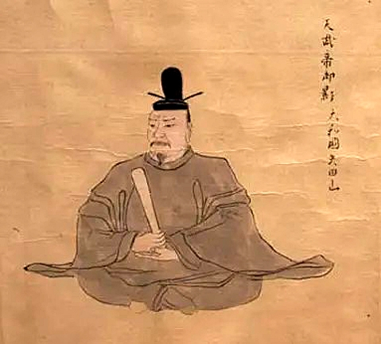
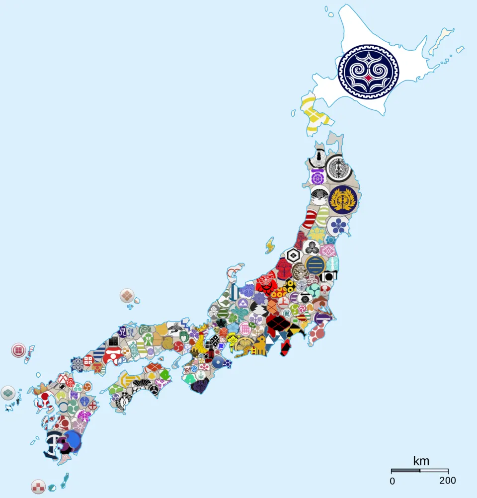
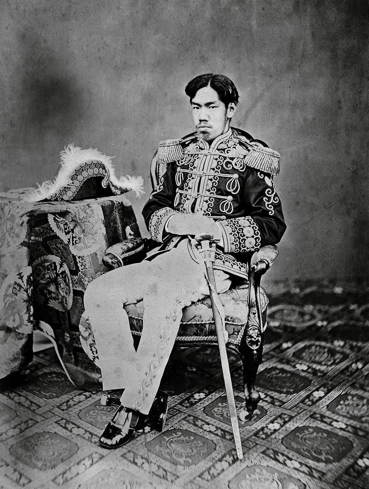
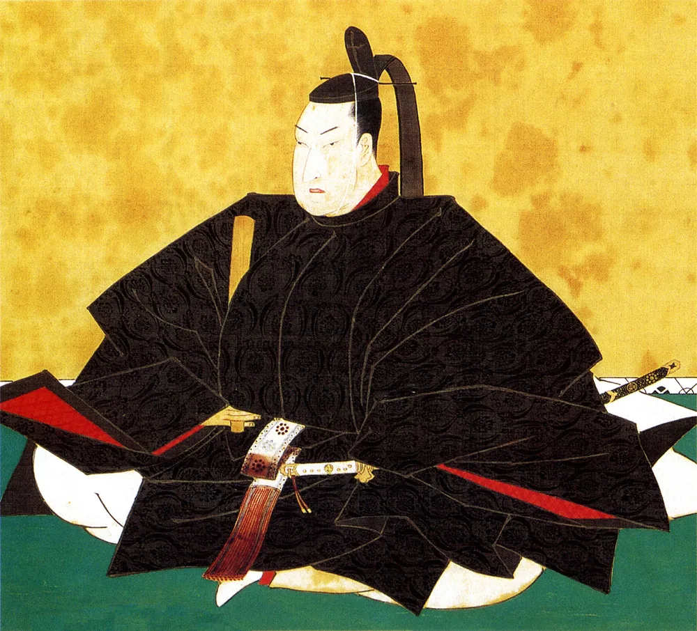
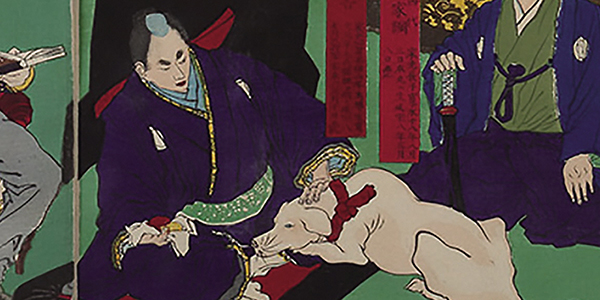
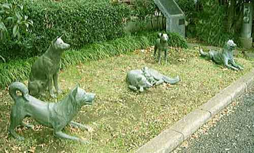
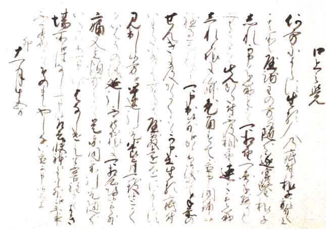
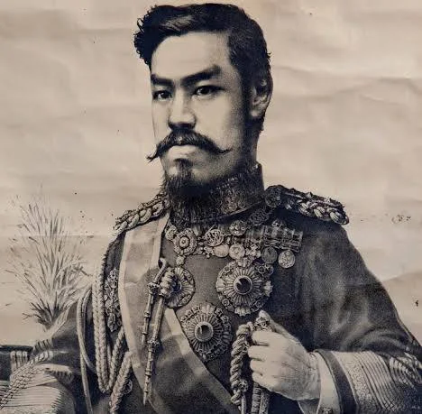

안녕하다
많은 싱붕이들은 이따금씩 이와 같은 의문을 가진 적이 있었을 것이다
"일본은 왜 날계란을 이렇게 많이 먹는 거지?
일본에는 왜 생선 요리가 많지?"
이런 것들 말이다.
대부분은 '육류금지령'때문이다.
왜캐 날계란을 좋아함? -> 육류금지령에 있어 가금류와 어패류는 비교적 자유로웠고, 그렇기에 가금류 중 대표적인 가축인 '닭'이 보편적으로 길러졌으며, 그 닭으로부터 비롯한 달걀은 좋은 단백질 공급원이었기에 대량 유통, 달걀을 이용한 식문화가 널리 퍼지게 되었다. 달걀이 존나 많으니 대부분 신선했으며, 그렇기에 날달걀로 먹어도 문제가 없었다.
(또한, 그 문화가 이어지며 일본의 달걀 유통 과정이 엄격해져서 현대에도 이어지는 것이다. 예로 일본의 달걀 유통기한은 한국의 절반 수준으로 존나 엄격하긴 하다. 그래서 날달걀로 먹어도 맛있음)
생선 요리는? -> 비슷하다. 어류는 좋은 단백질 공급원이기에 + 섬나라라서 물고기가 넘치기에 많이들 먹음
그럼 이 육류금지령, 육식금지령에 대해 알아보자

ㄴ 이 아저씨가 덴무 천황(텐노)이다.
제 40대 천황이다.
그리고 덴무 4년(675년). 육식금지령이 널리 퍼졌다.
내용은 이러하다.
『경인(17일)에 제국(諸國)에 조를 내려 “금후 각종 어업ㆍ수렵에 종사하는 자에게 금하노니 올무를 놓거나 함정을 파는 일, 기계를 이용한 창 놓기 등의 행위를 하지 말라. 또 4월 1일부터 9월 30일 이전까지 어린 고기를 잡는 것을 하지 마라. 또 소ㆍ말ㆍ개ㆍ원숭이ㆍ닭의 고기를 먹는 것을 삼가라. 이 이외에는 금례에 들지 않는다. 만약 이를 어기는 일이 있으면 벌을 내린다.”고 하였다.』
요약하자면, 육식을 완전 금하는 것은 아니지만,
농경 기간 동안에는 이를 엄격히 규제하는 것이다.
심지어 가금류와 어류까지 금했다고 한다.
흔히 일어나는 일이다.
"이렇게 나라가 어려운데 농사에 쓸 소를 다 잡아다 먹으면 큰일이 난다.
또한, 식용으로 기르는 가축은 효율이 꼬라박았기에 사람먹을거까지 가축이 다 쳐먹을 수가 있다."
라는 이유로 세계 각지에서 찾아볼 수 있는 정책이다.
이슬람교 등의 '일부 가축의 고기를 소비하는 것을 제한하는 규율'도 이러한 이유에서 기인하였다 보는 견해가 많다.
특히나, 일본은 불교의 영향을 씨게 받은 국가이기에
고기를 먹기 위해 살생을 하는 행위를 다소 꺼리곤 했다.
이런 상황에서 덴무 천황의 육식금지령은 이성과 감성 모두 충족하기에 꽤나 잘 받아들여졌다.
이마저도 위에서 말한 바와 같이 노동용으로도 사용 가능한 고가치의 가축인 '소'가 특히 중히 규제되었으며, 그 외에는 슬슬 봐주도록 바뀌기 시작했다.

더하여, 점차 완화되던 육식금지령은 시대를 지나 세계사에서 자주 본 '센고쿠 시대'(시기로는 무로마치 막부 후기)에 이르러, 서양과의 교류 및 쌈박질에 필요한 열량 부족 등을 이유로 더더욱 약화되었다.
그렇게 675년 시행된 육식금지령은 어디까지 갔을까?

바로 제 122대 천황. '메이지 유신'을 선포한 '메이지 천황'의 치하
1872년에 비로소 해제되었다.
ㅇㅇ 1200년 가까이 지나서 드디어 사라졌다.
"잠깐! 덴무 천황의 육식금지령은 금어기와 같이 기간제로 금하는 데다가, 비교적 유했다고 하지 않았나요? 이게 식문화에 그렇게 큰 영향을 주나요?"
사실 이 지점에서 오해가 자주 일어난다.
흔히들 "이 시기에 육식을 쌔게 잡아서 육식이 덜 발달했다"고 생각하는데,
법 자체는 1200년이라는 세월 동안 점차 약해져만 갔다.
그리고 시작점부터도 아예 금지하는 건 아니었고.
오히려 법보다는 일본인들 스스로의 인식이 육식 문화 발달 저하에 큰 영향을 미쳤다.
이런 법이 1200년간 이어진 것은 육식금지령 자체가 불교적 이념을 일부 기반으로 두기 때문으로, 불교가 일본에 미친 영향력을 생각해 보면 무시하기 어려운 수준이다.
그런 사회 속에서 육식이라는 행위 자체의 인식은 좋다고 보긴 어려웠을 것이다.
결국에는 육식금지령이 명분화되어 더욱 그런 인식이 보편화된 것이니
"육식금지령 때문에 육식 문화가 덜 발달했다"는 건 맞는 말일지도 모른다.
그리고, 중간에 변수가 한 번 있었다.

이 양반은
에도 막부 제5대 정이대장군 도쿠가와 츠나요시
라고 한다

이 양반은 개를 아주 좋아했다.

너무 좋아해서, 국민들의 혈세로 개집을 지을 정도였다.
개도 좋아했지만, 그냥 동물 전반에 걸쳐서 존나게 좋아했다.
츠나요시는 동물들이 죽지 않기를 바랬다.

그래서 '생류연민령(生類憐憫令, 직역시 생류 자비의 령)'을 반포한다.
말 그대로, 동물을 죽이지 말라는 뜻이다.
어류는 물론이고, 곤충까지. 전부 다.
자신에게 달려들며 공격하는 개를 베어 죽인 사무라이는 할복을 해야만 했고,
모기를 죽였다는 이유로 투옥되는 일까지 있었다.
이 동물좋아쇼군에게는 그가 제일 좋아하는 동물을 붙여
개쇼군(犬公方)이라는 이름이 붙었다.
그렇다 이새끼 평가는 개좆박았으며
내심 다들 임마가 뒤지길 바랬다.
아무튼 이 개새끼 때문에 당대 도축이랑 그런게 한번 싹 갈린것도 있다.
모기도 못 잡는데 고기뜯으려고 멱따고있을수가 있겠는가
이 생류연민령은 도쿠가와 츠나요시 사후 10일만에 폐지되었다.

그리고, 메이지 천황이 육식을 풀어준 뒤에도
도축 기술이 잘 발달하지 않아 하자가 심했고
1200년동안 육식을 꺼리다 보니 사람들도 적응을 잘 못해서
한동안 육식을 미개한 것으로 여기기도 했다.
이후 정부의 적극적 츄라이에도 이런 스탠스는 유지되다가
1900년대쯤에 거의 사라졌다
육식에 대한 거부감은 상당히 완화되었는데,
그럼에도 채식이 주류를 이루었다.
그렇지만 이 때 쯤엔 육식을 비선호한다기보다도 그저 채식에 익숙해서 채식을 하는 느낌이 되었다.
그러나
1945년 일제는 뻗대다가 원폭²을 맞고 뻗게 되었으며
한동안 고기를 먹고 싶어도 못 먹었다고 한다
육식금지령은 찾아보면 흔히 퍼진 인식과는 다르게 나름 유했지만
그럼에도 영향을 저평가하기에는 무리가 있다.
일례로, 와규같은 경우에도 메이지 유신 이후로 비로소 주목되었고
그 이전까지는 식용 품종 개량이라던지 그런건 미비했다.
메이지 유신 전까지는 대부분 고기보다는 일꾼으로 썼댄다.
일본은 섬나라라는 환경 + 세계사의 주역 중 하나로서
이토록 가까운 나라임에도 다소 이색적으로 느껴지는 문화가 있을 수 있다.
특이한 문화가 자리잡게 된 그 근원, 뿌리에 얽힌 이야기들을 찾아보는 것은 어떨까?
댓글
수집 당시 댓글 222개
· ㅇㅇ · 11.13 20:28:00
· ㅇㅇ · 11.13 20:28:53
· ㅇㅇ · 11.13 20:29:19
· ㅇㅇ · 11.13 20:30:08
· ㅇㅇ · 11.13 20:30:26
· ㅇㅇ · 11.13 20:30:55
· ㅇㅇ · 11.13 20:31:47
· ㅇㅇ · 11.13 20:32:41
· ㅇㅇ · 11.13 20:32:58
· ㅇㅇ · 11.13 20:33:23
· ㅇㅇ · 11.13 20:33:26
· ㅇㅇ · 11.13 20:39:40
· ㅇㅇ · 11.13 20:40:14
· ㅇㅇ · 11.13 20:49:43
· ㅇㅇ · 11.13 20:56:28
· ㅇㅇ · 11.13 21:03:07
ㅇㅇ · 11.13 20:20:47
ㅇㅇ · 11.13 20:22:15
· ㅇㅇ · 11.13 20:23:56
· ㅇㅇ · 11.13 20:26:17
ㅇㅇ · 11.13 20:22:16
ㅇㅇ · 11.13 20:24:16
ㅇㅇ · 11.13 20:25:49
· ㅇㅇ · 11.13 20:57:56
· ㅇㅇ · 11.13 22:04:37
ㅇㅇ · 11.13 20:26:26
· ㅇㅇ · 11.13 20:29:06
앱등이 · 11.13 20:39:24
Doll · 11.13 20:47:43
ㅇㅇ · 11.13 20:50:47
ㅇㅇ · 11.13 20:53:08
ㅇㅇ · 11.13 20:56:14
채피 · 11.13 20:58:34
ㅇㅇ · 11.13 21:00:32
ㅇㅇ · 11.13 21:00:39
ㅇㅇ · 11.13 21:08:49
ㅇㅇ · 11.13 21:10:36
ㅇㅇ · 11.13 21:12:59
· orthodox · 11.13 22:12:54
ㅇㅇ · 11.13 21:23:46
ㅇㅇ · 11.13 21:48:12
JungNu · 11.13 21:54:17
ㅇㅇ · 11.13 22:03:16
ㅇㅇ · 11.13 22:04:02
· ㅇㅇ · 11.14 00:30:26
더블알발음은아르르 · 11.13 22:08:42
ㅇㅇ · 11.13 22:10:07
· ㅇㅇ · 11.13 23:36:21
· ㅇㅇ · 11.13 23:36:25
· ㅇㅇ · 11.13 23:36:39
000 · 11.13 22:24:31
ㅇㅇ · 11.13 22:26:56
· ㅇㅇ · 11.13 22:28:21
· ㅇㅇ · 11.13 22:30:27
· ㅇㅇ · 11.13 22:35:03
· ㅇㅇ · 11.13 23:39:33
ㅇㅇ · 11.13 22:32:02
ㅇㅇ · 11.13 22:38:16
ㅇㅇ · 11.13 22:39:09
ㅇㅇ · 11.13 22:42:33
ㅇㅇ · 11.13 22:47:37
ㅇㅇ · 11.13 22:54:36
ㅇㅇ · 11.13 22:56:30
ㅇㅇ · 11.13 23:34:07
ㅇㅇ · 11.13 23:39:04
· ㅇㅇ · 11.13 23:39:50
· ㅇㅇ · 11.13 23:40:07
· ㅇㅇ · 11.13 23:40:43
· ㅇㅇ · 11.13 23:40:57
· ㅇㅇ · 11.13 23:41:19
· ㅇㅇ · 11.13 23:41:39
· ㅇㅇ · 11.13 23:42:05
· ㅇㅇ · 11.13 23:42:23
· ㅇㅇ · 11.13 23:42:42
· ㅇㅇ · 11.13 23:43:02
· ㅇㅇ · 11.13 23:43:25
· ㅇㅇ · 11.13 23:43:35
ㅇㅇ · 11.14 00:06:17
ㅇㅇ · 11.14 00:08:27
ㅇㅇ · 11.14 00:11:27
· ㅇㅇ · 11.14 00:13:13
· ㅇㅇ · 11.14 01:11:59
· ㅇㅇ · 11.14 08:56:07
ㅇㅇ · 11.14 00:26:27
ㅇㅇ · 11.14 01:52:10
ㅇㅇ · 11.14 02:00:14
ㅇㅇ · 11.14 02:00:20
ㅇㅇ · 11.14 02:06:40
ㅇㅇ · 11.14 04:53:35
ㅇㅇ · 11.14 07:52:26
· ㅇㅇ · 11.14 14:19:33
· ㅇㅇ · 11.14 18:23:13
· ㅇㅇ · 11.14 18:44:38
ㅇㅇ · 11.14 08:26:25
· ㅇㅇ · 11.14 08:55:09
포트리스 · 11.14 09:44:44
ㅇㅇ · 11.14 10:15:22
ㅇㅇ · 11.14 10:15:43
ㅇㅇ · 11.14 17:25:55
ㅇㅇ · 11.14 18:30:41
· ㅇㅇ · 11.13 19:59:32
· ㅇㅇ · 11.13 20:13:38
ㅇㅇ · 11.13 19:59:29
토라만 · 11.13 19:59:31
신 석 열 · 11.13 19:59:44
· ㅇㅇ · 11.13 20:00:52
· ㅇㅇ · 11.13 20:34:06
ㅇㅇ · 11.13 19:59:45
공정성장 · 11.13 20:00:39
ㅇㅇ · 11.13 20:00:58
해갤러 · 11.13 20:01:45
· ㅇㅇ · 11.13 20:04:05
· 싸가지미포함 · 11.13 21:39:56
· ㅇㅇ · 11.13 22:44:29
ㅇㅇ · 11.13 20:01:52
· 신 석 열 · 11.13 20:04:00
· 겐쉰프 · 11.13 20:13:30
· ㅇㅇ · 11.13 20:16:12
모하메드압두르후세인 · 11.13 20:02:40
· つついあやめのおっと · 11.13 20:21:28
· 모하메드압두르후세인 · 11.13 20:22:57
· つついあやめのおっと · 11.13 20:24:24
· 모하메드압두르후세인 · 11.13 20:25:58
· つついあやめのおっと · 11.13 20:57:33
ㅇㅇ · 11.13 20:03:06
ㅇㅇ · 11.13 20:03:41
· 겐쉰프 · 11.13 20:06:24
· ㅇㅇ · 11.13 20:06:29
· ㅇㅇ · 11.13 20:06:44
· 겐쉰프 · 11.13 20:07:13
· ㅇㅇ · 11.13 20:08:06
· 겐쉰프 · 11.13 20:08:57
· 겐쉰프 · 11.13 20:09:33
· ㅇㅇ · 11.13 20:10:25
· ㅇㅇ · 11.13 20:12:52
· 겐쉰프 · 11.13 20:14:43
· 겐쉰프 · 11.13 20:14:52
· 겐쉰프 · 11.13 20:15:33
· 겐쉰프 · 11.13 20:15:52
· ㅇㅇ · 11.13 20:16:18
· ㅇㅇ · 11.13 20:38:21
· ㅇㅇ · 11.13 20:40:46
· 겐쉰프 · 11.13 20:41:57
· 겐쉰프 · 11.13 20:42:50
· 겐쉰프 · 11.13 20:43:08
· ㅇㅇ · 11.13 21:03:01
· ㅇㅇ · 11.13 21:05:21
· ㅇㅇ · 11.13 21:11:33
· ㅇㅇ · 11.13 21:22:41
· ㅇㅇ · 11.13 21:25:22
ㅇㅇ · 11.13 20:05:03
ㅇㅇ · 11.13 20:06:10
· 겐쉰프 · 11.13 20:06:38
ㅇㅇ · 11.13 20:06:32
ㅇㅇ · 11.13 20:06:59
ㅇㅇ · 11.13 20:07:03
슈밤베르크 · 11.13 20:07:46
ㅇㅇ · 11.13 20:08:10
· ㅇㅇ · 11.13 20:08:39
채식주의의 원조 선진 갓본
· ㅇㅇ · 11.13 20:09:46
· ㅇㅇ · 11.13 20:11:09
· ㅇㅇ · 11.13 23:20:41
원갈이 · 11.13 20:08:40
ㅇㅇ · 11.13 20:09:05
해갤러 · 11.13 20:09:27
· 겐쉰프 · 11.13 20:10:08
· 겐쉰프 · 11.13 20:10:26
· ㅇㅇ · 11.13 20:10:30
· 겐쉰프 · 11.13 20:12:03
· ㅇㅇ · 11.13 20:12:37
ㅇㅇ · 11.13 20:10:03
· ㅇㅇ · 11.13 20:12:47
· ㅇㅇ · 11.13 20:21:02
DC전사쿠루미쨩 · 11.13 20:10:24
ㅇㅇ · 11.13 20:11:57
ㅇㅇ · 11.13 20:12:04
· 겐쉰프 · 11.13 20:12:33
· 신 석 열 · 11.13 20:12:40
· ㅇㅇ · 11.13 20:12:54
· ㅇㅇ · 11.13 20:51:35
ㅇㅇ · 11.13 20:12:17
ㅇㅇ · 11.13 20:12:51
· 싸가지미포함 · 11.13 21:37:30
ㅇㅇ · 11.13 20:13:24
ㅇㅇ · 11.13 20:13:44
ㅇㅇ · 11.13 20:14:49
· ㅇㅇ · 11.13 20:15:31
· ㅇㅇ · 11.13 20:18:16
· ㅇㅇ · 11.13 20:19:42
· ㅇㅇ · 11.13 20:19:51
· ㅇㅇ · 11.13 20:21:19
· ㅇㅇ · 11.13 20:22:06
· ㅇㅇ · 11.13 20:22:50
· ㅇㅇ · 11.13 20:24:10
· ㅇㅇ · 11.13 20:24:28
· ㅇㅇ · 11.13 20:24:51
· ㅇㅇ · 11.13 20:26:50
· ㅇㅇ · 11.13 20:27:12
· ㅇㅇ · 11.13 20:27:33
· ㅇㅇ · 11.13 20:27:48
여름불면증 · 11.11 18:43:02
ㅇㅇ · 11.11 18:43:21
· ㅇㅇ · 11.11 18:44:07
· 싸가지미포함 · 11.11 18:45:34
· ㅇㅇ · 11.11 18:46:40
· 바스테트 · 11.13 20:16:45
아니. · 11.11 18:45:04
· 싸가지미포함 · 11.11 18:47:40
· 싸가지미포함 · 11.11 18:49:00
· ㅇㅇ · 11.13 22:37:55
ㅇㅇ · 11.11 18:46:02
· 싸가지미포함 · 11.11 18:51:49
· ㅇㅇ · 11.13 22:38:58
ㅇㅇ · 11.11 18:47:53
· 싸가지미포함 · 11.11 18:49:53
2456778 · 11.13 19:56:44
3dd · 11.13 19:57:36
· ㅇㅇ · 11.13 20:15:43
· ㅇㅇ · 11.13 22:41:00
· ㅇㅇ · 11.13 22:42:15
ㅇㅇ · 11.13 19:58:29
ㅇㅇ · 11.13 19:59:21